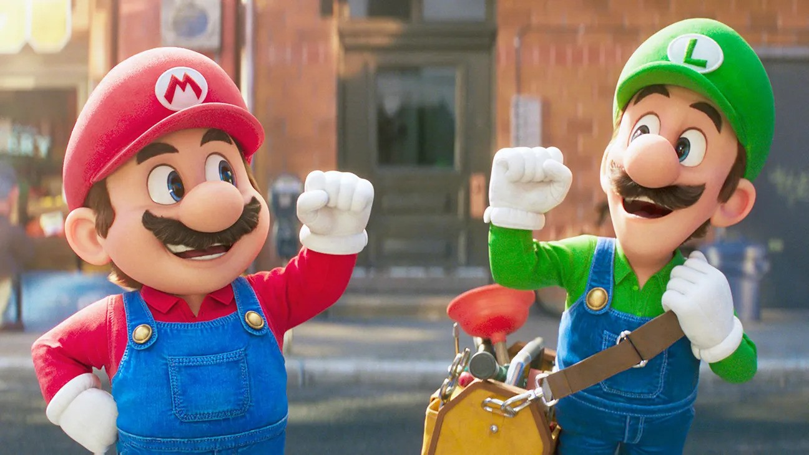
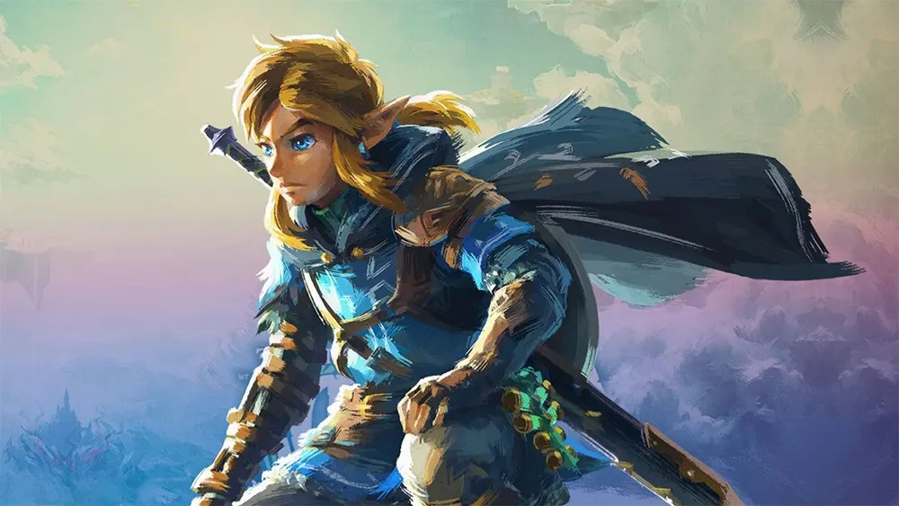
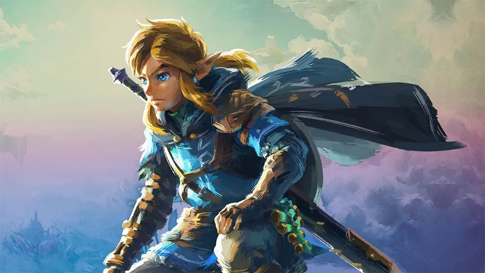
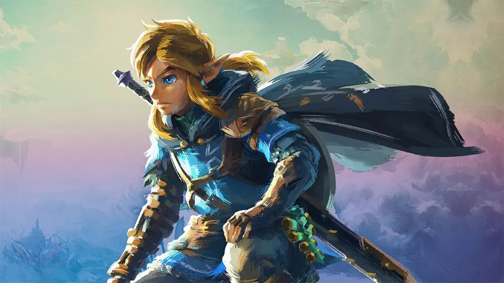
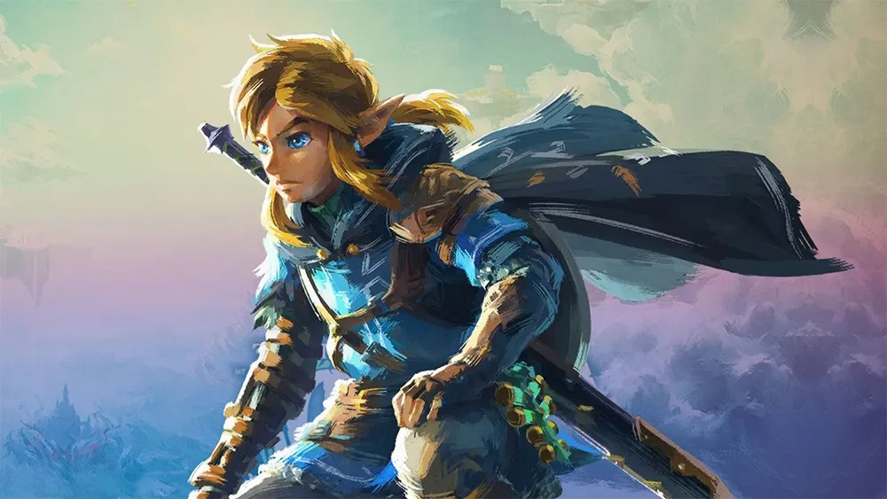

Our Retro Favorites
Here are a few of our favorite classic games.

 

Browse Our Collection

Here Nostalgia Meets Fun - Explore, Play and Share with Others
Experience the magic of retro games like never before!
MTU Retro Games Club brings together passionate gamers who share a love for vintage video games, consoles,
and the golden age of gaming. From arcade classics to home console hits, we celebrate it all!
Join us for our next event! Retro tournaments, game nights, and more.
Here are a few of our favorite classic games.

Sign up today to join our community of retro gamers and gain access to exclusive events and activities!
Sign Up NowA: You can join by visiting our Sign-Up Page, filling out the form, and submitting it. Membership is open to all students.
A: We host a variety of retro gaming events, including tournaments, themed gaming nights, and game development workshops. Check out our Events Page for more details.
A: No, the club provides gaming consoles and retro game cartridges for most events. However, you are welcome to bring your own equipment if you prefer!
Follow Us
Stay connected for the latest retro news and events.
Follow on Instagram Like us on Facebook Join our Discord